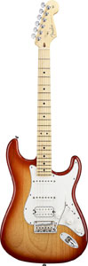

Добро пожаловать
Это сайт Скромнова К.М. посвящённый моему увлечению,а точнее гитарам,которые являются неотъемлемой частью нашего мира.Ведь без этого чудесного инструмента не было бы музыки в том виде, в котором мы имеем на данный момент.Без гитары не было бы таких мелодий,таких звуков,которые могут воспроизводить с помощью неё гитаристы.
Немного о гитарах
Акустическая гитара
-
 Гитара-это музыкальный инструмент (в большинстве разновидностей с шестью струнами), звучание которого осуществляется благодаря колебанию струн, усиливаемому за счёт резонирования полого корпуса. Современные акустические гитары могут иметь встроенные звукосниматели, эквалайзер и регулятор громкости.
Акустическая гитара является основным инструментом таких жанров, как авторская песня, фолк, занимает важное место в цыганской и кубинской народной музыке, роке, блюзе и других жанрах..
Гитара-это музыкальный инструмент (в большинстве разновидностей с шестью струнами), звучание которого осуществляется благодаря колебанию струн, усиливаемому за счёт резонирования полого корпуса. Современные акустические гитары могут иметь встроенные звукосниматели, эквалайзер и регулятор громкости.
Акустическая гитара является основным инструментом таких жанров, как авторская песня, фолк, занимает важное место в цыганской и кубинской народной музыке, роке, блюзе и других жанрах..
Электрическая гитара
Электрагитара — разновидность гитары с электромагнитными звукоснимателями, преобразующими колебания металлических струн в колебания электрического тока. Сигнал со звукоснимателей может быть обработан для получения различных звуковых эффектов и усилен — для воспроизведения через акустическую систему. Слово «электрогитара» возникло от словосочетания «электрическая гитара».
Электрогитары изготавливаются, как правило, из дерева. Самые распространённые материалы — ольха, ясень, махагони (красное дерево), клён. В качестве накладок на гриф применяют палисандр, чёрное дерево и клён..